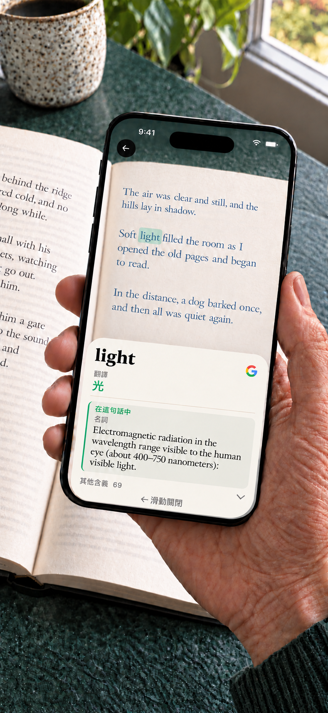

Booktionary · iPhone
紙本書的相機字典
別讓一個生字打斷一本好書。用 iPhone 相機對準紙本書中的詞語，查看意思，再繼續閱讀。不必手動輸入。
適用於執行 iOS 17 或更新版本的 iPhone。 · $1.99 USD

使用須知
先選擇書籍語言，對準一個詞並稍作停留。滑開釋義即可繼續閱讀。詞典和單字翻譯的收錄範圍依詞語和語言而異。瀏覽和下載語言資源需要連網。 長按釋義中的詞語，即可查詞、複製或使用 Google 搜尋，之後還能返回原本的詞條。也可以直接搜尋掃描到的詞語。
下載一次，離線查詞
App 內建英語詞典。其他詞典、單字翻譯和釋義翻譯所需的模型可依需求下載。安裝後可離線使用，不需要帳號。 Google 搜尋是選用功能，會開啟瀏覽器，且需要網路連線。只有在你選擇搜尋時，搜尋文字才會傳送給 Google。相機畫面仍留在你的 iPhone 上。
一次購買包含所有已提供的詞典和單字翻譯套件。不必訂閱，沒有 App 內購買。
找到適合這句話的意思
一個詞可能有多種含義。在支援的裝置上，Booktionary 會參考周圍文字，協助優先顯示符合當前語境的詞典釋義。你也可以查看其他含義。
閱讀英文書，多一份幫助
在英文釋義旁顯示中文譯詞。你也可以開啟釋義翻譯，在英文和中文之間切換。釋義翻譯目前以簡體中文呈現。閱讀前請先下載所需語言模型。

支援 24 種書籍語言的詞典
中文（簡體和繁體）、英語、日語、韓語、法語、德語、西班牙語、葡萄牙語、義大利語、捷克語、丹麥語、荷蘭語、印尼語、庫德語（庫爾曼吉，拉丁字母）、馬來語（羅馬字母 Rumi）、挪威語書面語（Bokmål）、波蘭語、羅馬尼亞語、俄語、瑞典語、泰語、土耳其語、烏克蘭語、越南語。
英語單字可翻譯成上述其他語言，以及希臘語。不支援掃描希臘語書籍。庫德語僅支援使用拉丁字母的庫爾曼吉，不包括索拉尼；馬來語僅支援 Rumi，不包括 Jawi。中文詞典釋義保留來源文字的書寫形式。 可將全部23種受支援的非英語書籍語言中的詞語翻譯成英語。對於有相容翻譯模型可用的語言，還可選擇顯示英語釋義翻譯。
- English內建
- Français下載
- Español下載
- Português下載
- Italiano下載
- Deutsch下載
- Dansk下載
- Nederlands下載
- Norsk (bokmål)下載
- Русский下載
- Svenska下載
- Polski下載
- Čeština下載
- 日本語下載
- ไทย下載
- Română下載
- Tiếng Việt下載
- Türkçe下載
- Bahasa Indonesia下載
- 中文 · 简体 / 繁體下載
- 한국어下載
- Українська下載
- Kurdî (Kurmancî)下載
- Bahasa Melayu下載
支援
閱讀時快速查詞